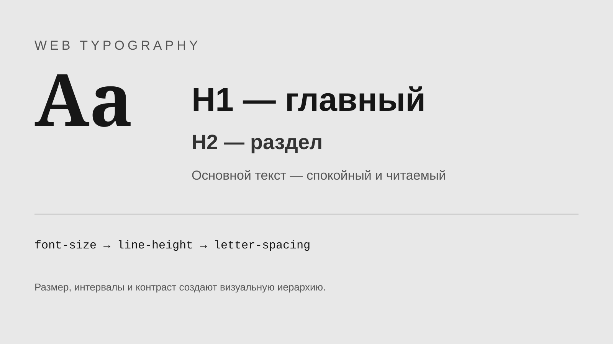
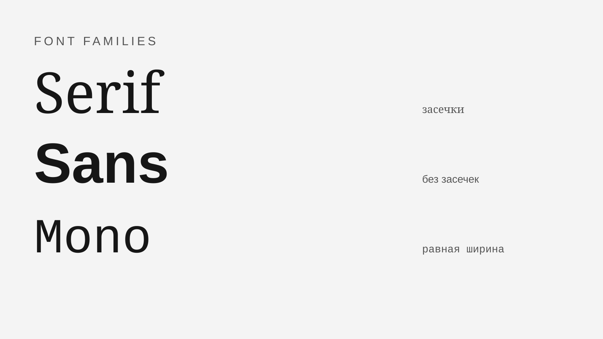
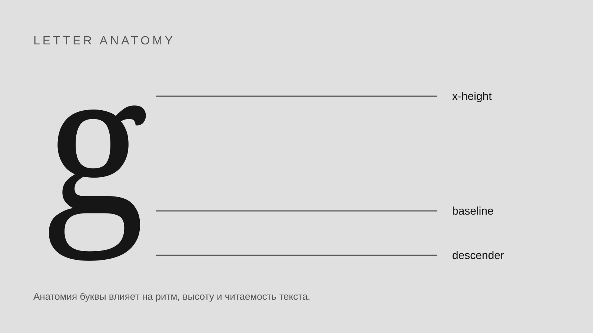

Читаемость
Размер текста, контраст и высота строки должны позволять читать материал без лишнего напряжения.
WEB DESIGN / TYPOGRAPHY
Шрифт — это не просто способ показать текст. Он формирует структуру страницы, задаёт настроение и помогает пользователю быстро находить нужную информацию.
Изучить основы01
Размер текста, контраст и высота строки должны позволять читать материал без лишнего напряжения.
Заголовки, подзаголовки и основной текст должны визуально показывать структуру материала.
Одинаковые элементы интерфейса должны использовать согласованные размеры, начертания и интервалы.
03



02